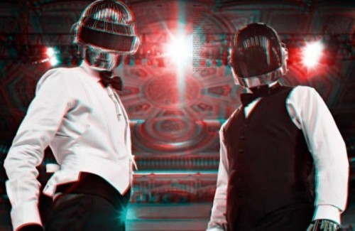

Fri, 26 Nov 2010 20:10:00 · 3D · Tron · DaftPunk · Photography · Dazed&Confused
Daft Punk Visualized in 3D

Cool 3D visualization of the psychedelic Daft Punk bands created by photographer Sharif Hamza for the December issue of Dazed & Confused magazine. Use your red/blue 3D glasses to properly see the 3D enhancement.
• See complete gallery here.